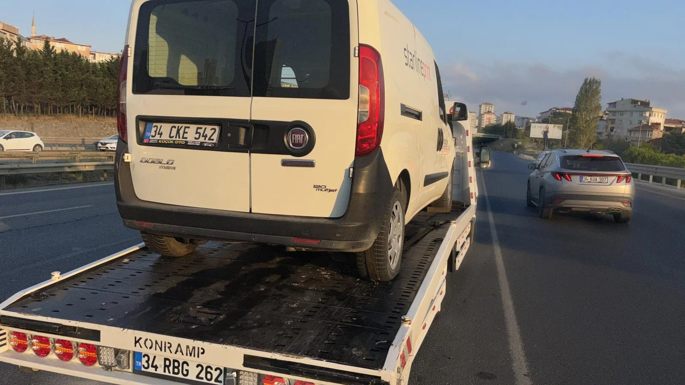

GÜVENLİK REHBERİ
⏱️ 8 Dk Okuma
Otoyolda Araç Arızalandığında Yapılması Gereken Hayati Adımlar
TEM veya Kuzey Marmara Otoyolu'nda 140 km/s hızla akan trafikte can güvenliğinizi korumak, 150m reflektör kuralı ve çelik bariyer tahliyesi altın kuralları.
Kapsamlı Rehberi Oku →